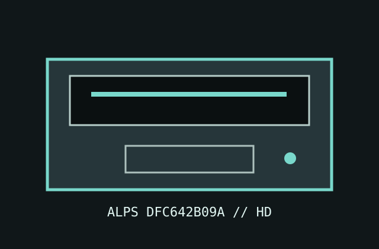

[ IDENTIFIED PC FLOPPY DRIVE ]
Alps DFC642B09A 1.2 MB 5.25-inch drive
A half-height Alps double-sided high-density mechanism. The exact suffix DFC642B09A is the identifying SKU; use the PCB markings and drive-specific jumper chart rather than generic Alps-family assumptions.

Documented specifications
| Density / capacity | Double-sided 5.25-inch HD mechanism; 1.2 MB formatted HD and 360 KB DD compatibility when controller, media, and alignment permit. |
|---|---|
| Interface | 34-pin PC floppy ribbon interface and 4-pin +5 V/+12 V power connector. |
| Data rate / speed | 500 kbit/s HD; 250 kbit/s DD controller mode; 360 rpm HD. Confirm DD speed and supported mode from the fitted PCB/manual. |
| Jumpers / drive select | Drive-select DS0–DS3 and termination/configuration jumpers vary by board. Select one PC drive line and consult the jumper reference for this exact PCB; no generic jumper position is assumed here. |
| Dimensions / power | Half-height, approximately 146 × 41 × 203 mm; +5 V and +12 V through a 4-pin connector. Current specifications are revision-dependent and should be checked against the unit label/service documentation. |
| PC controller compatibility | Standard PC/AT-compatible 765-family controllers support the 34-pin interface in 1.2 MB mode; controller BIOS and drive-select/cable setup must match. |
Preservation notes
Photograph the full label and PCB jumper legends before installation. Check the resistor pack, spindle speed and head condition; avoid alignment adjustments until known-good reference media and a suitable test setup are available.
Manuals & archive sources
- 5.25-inch floppy drive jumper referenceArchival configuration guide; use only after matching the board and option legends.
- 5.25-inch floppy drive documentation archivePreserved model/reference collection for period 5.25-inch drives and service material.
- Alps DFC642B09A model listing and specificationsSKU-specific identification and PC capacity/interface details; confirm values against the actual unit.